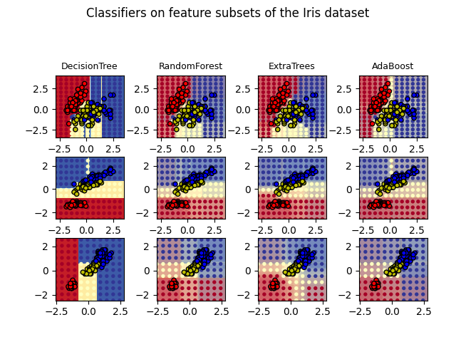

Note
Go to the end to download the full example code or to run this example in your browser via Binder
Plot the decision surfaces of ensembles of trees on the iris dataset¶
Plot the decision surfaces of forests of randomized trees trained on pairs of features of the iris dataset.
This plot compares the decision surfaces learned by a decision tree classifier (first column), by a random forest classifier (second column), by an extra- trees classifier (third column) and by an AdaBoost classifier (fourth column).
In the first row, the classifiers are built using the sepal width and the sepal length features only, on the second row using the petal length and sepal length only, and on the third row using the petal width and the petal length only.
In descending order of quality, when trained (outside of this example) on all 4 features using 30 estimators and scored using 10 fold cross validation, we see:
ExtraTreesClassifier() # 0.95 score
RandomForestClassifier() # 0.94 score
AdaBoost(DecisionTree(max_depth=3)) # 0.94 score
DecisionTree(max_depth=None) # 0.94 score
Increasing max_depth for AdaBoost lowers the standard deviation of
the scores (but the average score does not improve).
See the console’s output for further details about each model.
In this example you might try to:
vary the
max_depthfor theDecisionTreeClassifierandAdaBoostClassifier, perhaps trymax_depth=3for theDecisionTreeClassifierormax_depth=NoneforAdaBoostClassifiervary
n_estimators
It is worth noting that RandomForests and ExtraTrees can be fitted in parallel on many cores as each tree is built independently of the others. AdaBoost’s samples are built sequentially and so do not use multiple cores.
DecisionTree with features [0, 1] has a score of 0.9266666666666666
RandomForest with 30 estimators with features [0, 1] has a score of 0.9266666666666666
ExtraTrees with 30 estimators with features [0, 1] has a score of 0.9266666666666666
AdaBoost with 30 estimators with features [0, 1] has a score of 0.8666666666666667
DecisionTree with features [0, 2] has a score of 0.9933333333333333
RandomForest with 30 estimators with features [0, 2] has a score of 0.9933333333333333
ExtraTrees with 30 estimators with features [0, 2] has a score of 0.9933333333333333
AdaBoost with 30 estimators with features [0, 2] has a score of 0.9933333333333333
DecisionTree with features [2, 3] has a score of 0.9933333333333333
RandomForest with 30 estimators with features [2, 3] has a score of 0.9933333333333333
ExtraTrees with 30 estimators with features [2, 3] has a score of 0.9933333333333333
AdaBoost with 30 estimators with features [2, 3] has a score of 0.9933333333333333
import matplotlib.pyplot as plt
import numpy as np
from matplotlib.colors import ListedColormap
from sklearn.datasets import load_iris
from sklearn.ensemble import (
AdaBoostClassifier,
ExtraTreesClassifier,
RandomForestClassifier,
)
from sklearn.tree import DecisionTreeClassifier
# Parameters
n_classes = 3
n_estimators = 30
cmap = plt.cm.RdYlBu
plot_step = 0.02 # fine step width for decision surface contours
plot_step_coarser = 0.5 # step widths for coarse classifier guesses
RANDOM_SEED = 13 # fix the seed on each iteration
# Load data
iris = load_iris()
plot_idx = 1
models = [
DecisionTreeClassifier(max_depth=None),
RandomForestClassifier(n_estimators=n_estimators),
ExtraTreesClassifier(n_estimators=n_estimators),
AdaBoostClassifier(DecisionTreeClassifier(max_depth=3), n_estimators=n_estimators),
]
for pair in ([0, 1], [0, 2], [2, 3]):
for model in models:
# We only take the two corresponding features
X = iris.data[:, pair]
y = iris.target
# Shuffle
idx = np.arange(X.shape[0])
np.random.seed(RANDOM_SEED)
np.random.shuffle(idx)
X = X[idx]
y = y[idx]
# Standardize
mean = X.mean(axis=0)
std = X.std(axis=0)
X = (X - mean) / std
# Train
model.fit(X, y)
scores = model.score(X, y)
# Create a title for each column and the console by using str() and
# slicing away useless parts of the string
model_title = str(type(model)).split(".")[-1][:-2][: -len("Classifier")]
model_details = model_title
if hasattr(model, "estimators_"):
model_details += " with {} estimators".format(len(model.estimators_))
print(model_details + " with features", pair, "has a score of", scores)
plt.subplot(3, 4, plot_idx)
if plot_idx <= len(models):
# Add a title at the top of each column
plt.title(model_title, fontsize=9)
# Now plot the decision boundary using a fine mesh as input to a
# filled contour plot
x_min, x_max = X[:, 0].min() - 1, X[:, 0].max() + 1
y_min, y_max = X[:, 1].min() - 1, X[:, 1].max() + 1
xx, yy = np.meshgrid(
np.arange(x_min, x_max, plot_step), np.arange(y_min, y_max, plot_step)
)
# Plot either a single DecisionTreeClassifier or alpha blend the
# decision surfaces of the ensemble of classifiers
if isinstance(model, DecisionTreeClassifier):
Z = model.predict(np.c_[xx.ravel(), yy.ravel()])
Z = Z.reshape(xx.shape)
cs = plt.contourf(xx, yy, Z, cmap=cmap)
else:
# Choose alpha blend level with respect to the number
# of estimators
# that are in use (noting that AdaBoost can use fewer estimators
# than its maximum if it achieves a good enough fit early on)
estimator_alpha = 1.0 / len(model.estimators_)
for tree in model.estimators_:
Z = tree.predict(np.c_[xx.ravel(), yy.ravel()])
Z = Z.reshape(xx.shape)
cs = plt.contourf(xx, yy, Z, alpha=estimator_alpha, cmap=cmap)
# Build a coarser grid to plot a set of ensemble classifications
# to show how these are different to what we see in the decision
# surfaces. These points are regularly space and do not have a
# black outline
xx_coarser, yy_coarser = np.meshgrid(
np.arange(x_min, x_max, plot_step_coarser),
np.arange(y_min, y_max, plot_step_coarser),
)
Z_points_coarser = model.predict(
np.c_[xx_coarser.ravel(), yy_coarser.ravel()]
).reshape(xx_coarser.shape)
cs_points = plt.scatter(
xx_coarser,
yy_coarser,
s=15,
c=Z_points_coarser,
cmap=cmap,
edgecolors="none",
)
# Plot the training points, these are clustered together and have a
# black outline
plt.scatter(
X[:, 0],
X[:, 1],
c=y,
cmap=ListedColormap(["r", "y", "b"]),
edgecolor="k",
s=20,
)
plot_idx += 1 # move on to the next plot in sequence
plt.suptitle("Classifiers on feature subsets of the Iris dataset", fontsize=12)
plt.axis("tight")
plt.tight_layout(h_pad=0.2, w_pad=0.2, pad=2.5)
plt.show()
Total running time of the script: (0 minutes 3.355 seconds)